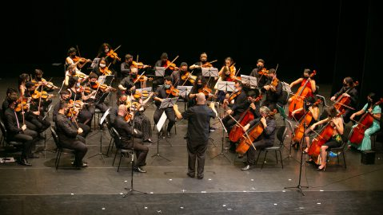

Music
Having his father very connected to music, since he was little he was in an environment very connected to music, already being interested in it in childhood, at 6 years old, he wanted to learn to play his first instrument, the piano, his parents then hired a teacher and so started his journey, followed his studies with a teacher until the age of 10, when he moved and could not continue his studies, playing only on public pianos.
Shortly after, he returned to the same city, but decided not to continue his studies with a teacher, studying alone since then.
In 2020, with the money he got thanks to his performance at the Mathematics Olympiad, he bought a violin, and started to learn on his own, in 2021, the opportunity arose to join the Cordas do Iguaçu project, where he had individual support from the team of teachers, and shortly after joining the Cordas do Iguaçu Orchestra, performing at several events, among them the great presentation at the Salvador de Ferrante Auditorium, in December 2021, in Curitiba, he continued in the project until June 2022, when he had to leave the project. for family issues.
In late 2021, he started learning guitar with the help of his father, and has been playing the instrument ever since.
He has participated in the music ministries of the parish he attends, playing at masses, events and weddings within the Catholic church.